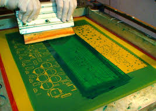

¿Quiénes somos?
Somos un jóven emprendimiento que utiliza técnicas de Serigrafía, idea que comenzó entre un grupo de amigos, con diseños únicos, a precios accesibles y con atención personalizada en cada situación.

¿Que es la Serigrafía?
La serigrafía es una técnica de impresión en el método de reproducción de documentos e imágenes sobre cualquier material, y consiste en transferir una tinta a través de una malla tensada en un marco.